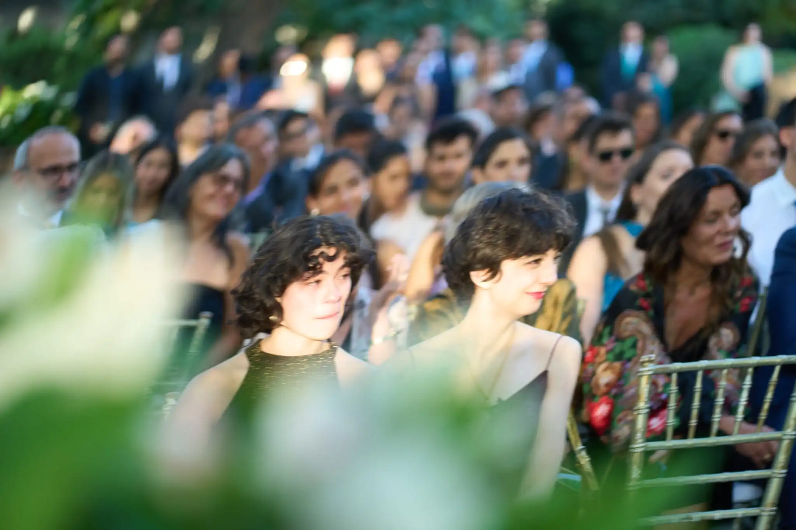

The problem I am thinking the most about right now is Structure-from-Motion for rolling shutter cameras. A rolling shutter camera is a camera that scans space instead of taking the picture all at once, this can produce distorsions when there is movement while taking pictures (like in the picture on the left!). I am interested in using algebraic geometry to use these distortions in order to obtain more information about the scene than the one we can recover through a global shutter camera.
Publications
Single-view Rolling-Shutter SfM
with Kim Kiehn, Petr Hrúby and Kathlén Kohn
preprint 2025